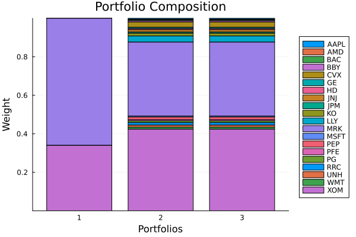

The source files can be found in examples/.
Near optimal centering
A classic optimiser returns the single point that exactly extremises its objective — the maximum-ratio portfolio, the minimum-variance portfolio, and so on. That point often sits on a knife edge: a corner solution that loads heavily on a handful of assets and shifts a lot when the inputs wobble. NearOptimalCentering (NOC) trades a sliver of optimality for stability. Instead of the extreme point, it returns the portfolio at the analytic centre of the near-optimal neighbourhood — the region of solutions that are almost as good as the optimum. The neighbourhood is parametrised by binning the efficient frontier (bins).
We met NOC briefly as a frontier/surface engine in the efficient-frontier and Pareto-surface examples; here we focus on the behaviour that makes it its own optimiser: how its centred solution differs from the extreme point of the same objective.
Reach for NOC when you like a MeanRisk objective but distrust its corner solutions — when you want the spirit of "maximum risk-adjusted return" without betting the book on two assets, or a more stable allocation that survives small changes in the prior. Use UnconstrainedNearOptimalCentering for the plain centred portfolio, and ConstrainedNearOptimalCentering when the centred solution must also satisfy the problem's external constraints (at the cost of a harder solve). If you genuinely want the extreme point, use MeanRisk directly.
using PortfolioOptimisers, PrettyTablesresfmt = (v, i, j) -> begin if j == 1 return v else return isa(v, Number) ? "$(round(v*100, digits=3)) %" : v endend;1. ReturnsResult data
We use the same S&P 500 slice as the other optimiser examples.
using CSV, TimeSeries, DataFramesX = TimeArray(CSV.File(joinpath(@__DIR__, "..", "SP500.csv.gz")); timestamp = :Date)[(end - 252):end]rd = prices_to_returns(X)ReturnsResult
nx ┼ 20-element Vector{String}
X ┼ 252×20 Matrix{Float64}
nf ┼ nothing
F ┼ nothing
nb ┼ nothing
B ┼ nothing
ts ┼ 252-element Vector{Date}
iv ┼ nothing
ivpa ┼ nothing
pnl ┼ AssetPanel
│ pf ┼ Vector{AbstractPanelField}: AbstractPanelField[]
│ amsk ┼ 252×20 AllTrueMask
│ emsk ┴ 252×20 AllTrueMask
2. Prior and solvers
NOC solves a harder problem than a plain MeanRisk (it bins the frontier and centres within a neighbourhood), so a single solver configuration can fail to converge. We therefore pass a vector of solvers with decreasing max_step_fraction; the optimiser falls back through them until one succeeds. We also use the SOC-based StandardDeviation risk measure — see the findings note on why a plain quadratic Variance is not a good fit for NOC.
using Clarabelslv = [Solver(; name = Symbol("clarabel$i"), solver = Clarabel.Optimizer, settings = Dict("verbose" => false, "max_step_fraction" => f), check_sol = (; allow_local = true, allow_almost = true)) for (i, f) in enumerate((0.99, 0.95, 0.9, 0.85, 0.8, 0.75, 0.7))]pr = prior(EmpiricalPrior(), rd)rf = 4.2 / 100 / 252opt = JuMPOptimiser(; pe = pr, slv = slv)JuMPOptimiser
pe ┼ LowOrderPrior
│ X ┼ 252×20 Matrix{Float64}
│ o_X ┼ nothing
│ mu ┼ 20-element Vector{Float64}
│ sigma ┼ 20×20 Matrix{Float64}
│ chol ┼ nothing
│ w ┼ nothing
│ ens ┼ nothing
│ kld ┼ nothing
│ ow ┼ nothing
│ rr ┼ nothing
│ fpr ┴ nothing
slv ┼ 7-element Vector{Solver}
│ Solver ⋯
│ Solver ⋯
│ Solver ⋯
│ Solver ⋯
│ Solver ⋯
│ Solver ⋯
│ Solver ⋯
wb ┼ WeightBounds
│ lb ┼ Float64: 0.0
│ ub ┴ Float64: 1.0
bgt ┼ Float64: 1.0
sbgt ┼ nothing
gbgt ┼ nothing
xbgt ┼ Bool: false
lt ┼ nothing
st ┼ nothing
lcse ┼ nothing
cte ┼ nothing
gcarde ┼ nothing
sgcarde ┼ nothing
smtx ┼ nothing
sgmtx ┼ nothing
slt ┼ nothing
sst ┼ nothing
sglt ┼ nothing
sgst ┼ nothing
tn ┼ nothing
fees ┼ nothing
sets ┼ nothing
tr ┼ nothing
ple ┼ nothing
ret ┼ ArithmeticReturn
│ settings ┼ JuMPReturnsSettings
│ │ scale ┼ Float64: 1.0
│ │ lb ┼ nothing
│ │ rte ┼ Bool: true
│ │ fee ┼ Bool: true
│ │ mic ┴ Bool: true
│ ucs ┼ nothing
│ mu ┴ nothing
sca ┼ SumScalariser()
ccnt ┼ nothing
cobj ┼ nothing
sc ┼ Int64: 1
so ┼ Int64: 1
ss ┼ nothing
card ┼ nothing
scard ┼ nothing
l2c ┼ nothing
lpc ┼ nothing
linfc ┼ nothing
l1 ┼ nothing
l2 ┼ nothing
lp ┼ nothing
linf ┼ nothing
brt ┼ Bool: false
x_src ┼ Symbol: :prior
strict ┴ Bool: false
3. The reference: a MeanRisk corner solution
First the plain maximum risk-adjusted return portfolio. This is the extreme point NOC will centre around.
res_mr = optimise(MeanRisk(; r = StandardDeviation(), obj = MaximumRatio(; rf = rf), opt = opt))MeanRiskResult
jr ┼ JuMPOptimisationResult
│ pa ┼ ProcessedJuMPOptimiserAttributes
│ │ pr ┼ LowOrderPrior
│ │ │ X ┼ 252×20 Matrix{Float64}
│ │ │ o_X ┼ nothing
│ │ │ mu ┼ 20-element Vector{Float64}
│ │ │ sigma ┼ 20×20 Matrix{Float64}
│ │ │ chol ┼ nothing
│ │ │ w ┼ nothing
│ │ │ ens ┼ nothing
│ │ │ kld ┼ nothing
│ │ │ ow ┼ nothing
│ │ │ rr ┼ nothing
│ │ │ fpr ┴ nothing
│ │ wb ┼ WeightBounds
│ │ │ lb ┼ 20-element StepRangeLen{Float64, Base.TwicePrecision{Float64}, Base.TwicePrecision{Float64}, Int64}
│ │ │ ub ┴ 20-element StepRangeLen{Float64, Base.TwicePrecision{Float64}, Base.TwicePrecision{Float64}, Int64}
│ │ lt ┼ nothing
│ │ st ┼ nothing
│ │ lcsr ┼ nothing
│ │ ctr ┼ nothing
│ │ gcardr ┼ nothing
│ │ sgcardr ┼ nothing
│ │ smtx ┼ nothing
│ │ sgmtx ┼ nothing
│ │ slt ┼ nothing
│ │ sst ┼ nothing
│ │ sglt ┼ nothing
│ │ sgst ┼ nothing
│ │ tn ┼ nothing
│ │ fees ┼ nothing
│ │ plr ┼ nothing
│ │ ret ┼ ArithmeticReturn
│ │ │ settings ┼ JuMPReturnsSettings
│ │ │ │ scale ┼ Float64: 1.0
│ │ │ │ lb ┼ nothing
│ │ │ │ rte ┼ Bool: true
│ │ │ │ fee ┼ Bool: true
│ │ │ │ mic ┴ Bool: true
│ │ │ ucs ┼ nothing
│ │ │ mu ┴ 20-element Vector{Float64}
│ │ sca ┼ SumScalariser()
│ │ imsk ┴ nothing
│ retcode ┼ OptimisationSuccess
│ │ res ┴ Dict{Any, Any}: Dict{Any, Any}()
│ sol ┼ JuMPOptimisationSolution
│ │ w ┴ 20-element Vector{Float64}
│ model ┼ A JuMP Model
│ │ ├ solver: Clarabel
│ │ ├ objective_sense: MIN_SENSE
│ │ │ └ objective_function_type: AffExpr
│ │ ├ num_variables: 22
│ │ ├ num_constraints: 6
│ │ │ ├ AffExpr in MOI.EqualTo{Float64}: 2
│ │ │ ├ Vector{AffExpr} in MOI.Nonnegatives: 1
│ │ │ ├ Vector{AffExpr} in MOI.Nonpositives: 1
│ │ │ ├ Vector{AffExpr} in MOI.SecondOrderCone: 1
│ │ │ └ VariableRef in MOI.GreaterThan{Float64}: 1
│ │ └ Names registered in the model
│ │ └ :G, :T, :bgt, :csd_risk_soc_1, :k, :lw, :obj_expr, :ohf, :ret, :ret_1, :ret_vec, :risk, :risk_vec, :sc, :sd_risk_1, :so, :sr_ret, :w, :w_lb, :w_ub
r ┼ StandardDeviation
│ settings ┼ RiskMeasureSettings
│ │ scale ┼ Float64: 1.0
│ │ ub ┼ nothing
│ │ rke ┴ Bool: true
│ sigma ┼ 20×20 Matrix{Float64}
│ chol ┴ nothing
fb ┴ nothing
4. Unconstrained near optimal centering
Now the same objective through NOC. UnconstrainedNearOptimalCentering does not impose the problem's external constraints on the centred solution, which keeps the solve tractable.
res_noc_u = optimise(NearOptimalCentering(; r = StandardDeviation(), obj = MaximumRatio(; rf = rf), opt = opt, alg = UnconstrainedNearOptimalCentering()))NearOptimalCenteringResult
jr ┼ JuMPOptimisationResult
│ pa ┼ ProcessedJuMPOptimiserAttributes
│ │ pr ┼ LowOrderPrior
│ │ │ X ┼ 252×20 Matrix{Float64}
│ │ │ o_X ┼ nothing
│ │ │ mu ┼ 20-element Vector{Float64}
│ │ │ sigma ┼ 20×20 Matrix{Float64}
│ │ │ chol ┼ nothing
│ │ │ w ┼ nothing
│ │ │ ens ┼ nothing
│ │ │ kld ┼ nothing
│ │ │ ow ┼ nothing
│ │ │ rr ┼ nothing
│ │ │ fpr ┴ nothing
│ │ wb ┼ WeightBounds
│ │ │ lb ┼ 20-element StepRangeLen{Float64, Base.TwicePrecision{Float64}, Base.TwicePrecision{Float64}, Int64}
│ │ │ ub ┴ 20-element StepRangeLen{Float64, Base.TwicePrecision{Float64}, Base.TwicePrecision{Float64}, Int64}
│ │ lt ┼ nothing
│ │ st ┼ nothing
│ │ lcsr ┼ nothing
│ │ ctr ┼ nothing
│ │ gcardr ┼ nothing
│ │ sgcardr ┼ nothing
│ │ smtx ┼ nothing
│ │ sgmtx ┼ nothing
│ │ slt ┼ nothing
│ │ sst ┼ nothing
│ │ sglt ┼ nothing
│ │ sgst ┼ nothing
│ │ tn ┼ nothing
│ │ fees ┼ nothing
│ │ plr ┼ nothing
│ │ ret ┼ ArithmeticReturn
│ │ │ settings ┼ JuMPReturnsSettings
│ │ │ │ scale ┼ Float64: 1.0
│ │ │ │ lb ┼ nothing
│ │ │ │ rte ┼ Bool: true
│ │ │ │ fee ┼ Bool: true
│ │ │ │ mic ┴ Bool: true
│ │ │ ucs ┼ nothing
│ │ │ mu ┴ 20-element Vector{Float64}
│ │ sca ┼ SumScalariser()
│ │ imsk ┴ nothing
│ retcode ┼ OptimisationSuccess
│ │ res ┴ nothing
│ sol ┼ JuMPOptimisationSolution
│ │ w ┴ 20-element Vector{Float64}
│ model ┼ A JuMP Model
│ │ ├ solver: Clarabel
│ │ ├ objective_sense: MIN_SENSE
│ │ │ └ objective_function_type: AffExpr
│ │ ├ num_variables: 63
│ │ ├ num_constraints: 46
│ │ │ ├ AffExpr in MOI.EqualTo{Float64}: 1
│ │ │ ├ Vector{AffExpr} in MOI.Nonnegatives: 1
│ │ │ ├ Vector{AffExpr} in MOI.Nonpositives: 1
│ │ │ ├ Vector{AffExpr} in MOI.SecondOrderCone: 1
│ │ │ └ Vector{AffExpr} in MOI.ExponentialCone: 42
│ │ └ Names registered in the model
│ │ └ :G, :T, :bgt, :clog_delta_w, :clog_ret, :clog_risk, :clog_w, :csd_risk_soc_1, :k, :log_delta_w, :log_ret, :log_risk, :log_w, :lw, :noc_rk, :noc_rt, :obj_expr, :ret, :ret_1, :ret_vec, :risk, :risk_vec, :sc, :sd_risk_1, :so, :w, :w_lb, :w_ub
r ┼ StandardDeviation
│ settings ┼ RiskMeasureSettings
│ │ scale ┼ Float64: 1.0
│ │ ub ┼ nothing
│ │ rke ┴ Bool: true
│ sigma ┼ 20×20 Matrix{Float64}
│ chol ┴ nothing
w_min_retcode ┼ OptimisationSuccess
│ res ┴ Dict{Any, Any}: Dict{Any, Any}()
w_opt_retcode ┼ OptimisationSuccess
│ res ┴ Dict{Any, Any}: Dict{Any, Any}()
w_max_retcode ┼ OptimisationSuccess
│ res ┴ Dict{Any, Any}: Dict{Any, Any}()
noc_retcode ┼ OptimisationSuccess
│ res ┴ Dict{Any, Any}: Dict{Any, Any}(:clarabel1 => Dict{Symbol, Any}(:settings => Dict{String, Real}("max_step_fraction" => 0.99, "verbose" => false), :err => solution_summary(; result = 1, verbose = false)
│ ├ solver_name : Clarabel
│ ├ Termination
│ │ ├ termination_status : SLOW_PROGRESS
│ │ ├ result_count : 1
│ │ └ raw_status : INSUFFICIENT_PROGRESS
│ ├ Solution (result = 1)
│ │ ├ primal_status : OTHER_RESULT_STATUS
│ │ ├ dual_status : OTHER_RESULT_STATUS
│ │ ├ objective_value : 1.00882e+02
│ │ └ dual_objective_value : 9.99534e+01
│ └ Work counters
│ ├ solve_time (sec) : 3.68477e-03
│ └ barrier_iterations : 40, :assert_is_solved_and_feasible => ErrorException("The model was not solved correctly. Here is the output of `solution_summary` to help debug why this happened:\n\nsolution_summary(; result = 1, verbose = false)\n├ solver_name : Clarabel\n├ Termination\n│ ├ termination_status : SLOW_PROGRESS\n│ ├ result_count : 1\n│ └ raw_status : INSUFFICIENT_PROGRESS\n├ Solution (result = 1)\n│ ├ primal_status : OTHER_RESULT_STATUS\n│ ├ dual_status : OTHER_RESULT_STATUS\n│ ├ objective_value : 1.00882e+02\n│ └ dual_objective_value : 9.99534e+01\n└ Work counters\n ├ solve_time (sec) : 3.68477e-03\n └ barrier_iterations : 40\n")))
fb ┴ nothing
5. Constrained near optimal centering
ConstrainedNearOptimalCentering additionally requires the centred portfolio to satisfy the external constraints. It is a harder solve (hence the solver fallback vector), but keeps the result feasible with respect to whatever bounds or budgets you have imposed.
res_noc_c = optimise(NearOptimalCentering(; r = StandardDeviation(), obj = MaximumRatio(; rf = rf), opt = opt, alg = ConstrainedNearOptimalCentering()))NearOptimalCenteringResult
jr ┼ JuMPOptimisationResult
│ pa ┼ ProcessedJuMPOptimiserAttributes
│ │ pr ┼ LowOrderPrior
│ │ │ X ┼ 252×20 Matrix{Float64}
│ │ │ o_X ┼ nothing
│ │ │ mu ┼ 20-element Vector{Float64}
│ │ │ sigma ┼ 20×20 Matrix{Float64}
│ │ │ chol ┼ nothing
│ │ │ w ┼ nothing
│ │ │ ens ┼ nothing
│ │ │ kld ┼ nothing
│ │ │ ow ┼ nothing
│ │ │ rr ┼ nothing
│ │ │ fpr ┴ nothing
│ │ wb ┼ WeightBounds
│ │ │ lb ┼ 20-element StepRangeLen{Float64, Base.TwicePrecision{Float64}, Base.TwicePrecision{Float64}, Int64}
│ │ │ ub ┴ 20-element StepRangeLen{Float64, Base.TwicePrecision{Float64}, Base.TwicePrecision{Float64}, Int64}
│ │ lt ┼ nothing
│ │ st ┼ nothing
│ │ lcsr ┼ nothing
│ │ ctr ┼ nothing
│ │ gcardr ┼ nothing
│ │ sgcardr ┼ nothing
│ │ smtx ┼ nothing
│ │ sgmtx ┼ nothing
│ │ slt ┼ nothing
│ │ sst ┼ nothing
│ │ sglt ┼ nothing
│ │ sgst ┼ nothing
│ │ tn ┼ nothing
│ │ fees ┼ nothing
│ │ plr ┼ nothing
│ │ ret ┼ ArithmeticReturn
│ │ │ settings ┼ JuMPReturnsSettings
│ │ │ │ scale ┼ Float64: 1.0
│ │ │ │ lb ┼ nothing
│ │ │ │ rte ┼ Bool: true
│ │ │ │ fee ┼ Bool: true
│ │ │ │ mic ┴ Bool: true
│ │ │ ucs ┼ nothing
│ │ │ mu ┴ 20-element Vector{Float64}
│ │ sca ┼ SumScalariser()
│ │ imsk ┴ nothing
│ retcode ┼ OptimisationSuccess
│ │ res ┴ nothing
│ sol ┼ JuMPOptimisationSolution
│ │ w ┴ 20-element Vector{Float64}
│ model ┼ A JuMP Model
│ │ ├ solver: Clarabel
│ │ ├ objective_sense: MIN_SENSE
│ │ │ └ objective_function_type: AffExpr
│ │ ├ num_variables: 63
│ │ ├ num_constraints: 46
│ │ │ ├ AffExpr in MOI.EqualTo{Float64}: 1
│ │ │ ├ Vector{AffExpr} in MOI.Nonnegatives: 1
│ │ │ ├ Vector{AffExpr} in MOI.Nonpositives: 1
│ │ │ ├ Vector{AffExpr} in MOI.SecondOrderCone: 1
│ │ │ └ Vector{AffExpr} in MOI.ExponentialCone: 42
│ │ └ Names registered in the model
│ │ └ :G, :T, :bgt, :clog_delta_w, :clog_ret, :clog_risk, :clog_w, :csd_risk_soc_1, :k, :log_delta_w, :log_ret, :log_risk, :log_w, :lw, :noc_rk, :noc_rt, :obj_expr, :ret, :ret_1, :ret_vec, :risk, :risk_vec, :sc, :sd_risk_1, :so, :w, :w_lb, :w_ub
r ┼ StandardDeviation
│ settings ┼ RiskMeasureSettings
│ │ scale ┼ Float64: 1.0
│ │ ub ┼ nothing
│ │ rke ┴ Bool: true
│ sigma ┼ 20×20 Matrix{Float64}
│ chol ┴ nothing
w_min_retcode ┼ OptimisationSuccess
│ res ┴ Dict{Any, Any}: Dict{Any, Any}()
w_opt_retcode ┼ OptimisationSuccess
│ res ┴ Dict{Any, Any}: Dict{Any, Any}()
w_max_retcode ┼ OptimisationSuccess
│ res ┴ Dict{Any, Any}: Dict{Any, Any}()
noc_retcode ┼ OptimisationSuccess
│ res ┴ Dict{Any, Any}: Dict{Any, Any}(:clarabel1 => Dict{Symbol, Any}(:settings => Dict{String, Real}("max_step_fraction" => 0.99, "verbose" => false), :err => solution_summary(; result = 1, verbose = false)
│ ├ solver_name : Clarabel
│ ├ Termination
│ │ ├ termination_status : SLOW_PROGRESS
│ │ ├ result_count : 1
│ │ └ raw_status : INSUFFICIENT_PROGRESS
│ ├ Solution (result = 1)
│ │ ├ primal_status : OTHER_RESULT_STATUS
│ │ ├ dual_status : OTHER_RESULT_STATUS
│ │ ├ objective_value : 1.00882e+02
│ │ └ dual_objective_value : 9.99534e+01
│ └ Work counters
│ ├ solve_time (sec) : 3.49570e-03
│ └ barrier_iterations : 40, :assert_is_solved_and_feasible => ErrorException("The model was not solved correctly. Here is the output of `solution_summary` to help debug why this happened:\n\nsolution_summary(; result = 1, verbose = false)\n├ solver_name : Clarabel\n├ Termination\n│ ├ termination_status : SLOW_PROGRESS\n│ ├ result_count : 1\n│ └ raw_status : INSUFFICIENT_PROGRESS\n├ Solution (result = 1)\n│ ├ primal_status : OTHER_RESULT_STATUS\n│ ├ dual_status : OTHER_RESULT_STATUS\n│ ├ objective_value : 1.00882e+02\n│ └ dual_objective_value : 9.99534e+01\n└ Work counters\n ├ solve_time (sec) : 3.49570e-03\n └ barrier_iterations : 40\n")))
fb ┴ nothing
6. Comparing the allocations
The contrast is the whole point. The extreme maximum-ratio portfolio piles into a couple of assets; both NOC variants spread the same objective across many more names by sitting at the centre of the near-optimal region rather than at its corner.
pretty_table(DataFrame(; :assets => rd.nx, Symbol("MaxRatio (extreme)") => res_mr.w, Symbol("NOC unconstrained") => res_noc_u.w, Symbol("NOC constrained") => res_noc_c.w); formatters = [resfmt])┌────────┬────────────────────┬───────────────────┬─────────────────┐
│ assets │ MaxRatio (extreme) │ NOC unconstrained │ NOC constrained │
│ String │ Float64 │ Float64 │ Float64 │
├────────┼────────────────────┼───────────────────┼─────────────────┤
│ AAPL │ 0.0 % │ 0.463 % │ 0.463 % │
│ AMD │ 0.0 % │ 0.281 % │ 0.281 % │
│ BAC │ 0.0 % │ 0.505 % │ 0.505 % │
│ BBY │ 0.0 % │ 0.684 % │ 0.684 % │
│ CVX │ 0.0 % │ 2.785 % │ 2.785 % │
│ GE │ 0.0 % │ 0.622 % │ 0.622 % │
│ HD │ 0.0 % │ 0.606 % │ 0.606 % │
│ JNJ │ 0.0 % │ 1.206 % │ 1.206 % │
│ JPM │ 0.0 % │ 0.644 % │ 0.644 % │
│ KO │ 0.0 % │ 1.378 % │ 1.378 % │
│ LLY │ 0.0 % │ 3.215 % │ 3.215 % │
│ MRK │ 66.038 % │ 38.421 % │ 38.421 % │
│ MSFT │ 0.0 % │ 0.468 % │ 0.468 % │
│ PEP │ 0.0 % │ 1.256 % │ 1.256 % │
│ PFE │ 0.0 % │ 0.71 % │ 0.71 % │
│ PG │ 0.0 % │ 0.925 % │ 0.925 % │
│ RRC │ 0.0 % │ 1.324 % │ 1.324 % │
│ UNH │ 0.0 % │ 1.064 % │ 1.064 % │
│ WMT │ 0.0 % │ 1.044 % │ 1.044 % │
│ XOM │ 33.961 % │ 42.397 % │ 42.397 % │
└────────┴────────────────────┴───────────────────┴─────────────────┘A quick numeric summary of the diversification difference: the largest single weight and the number of materially-held assets.
summarise(w) = (round(maximum(w) * 100; digits = 2), count(>(1e-4), w))pretty_table(DataFrame(; :portfolio => ["MaxRatio (extreme)", "NOC unconstrained", "NOC constrained"], Symbol("max weight %") => [summarise(res_mr.w)[1], summarise(res_noc_u.w)[1], summarise(res_noc_c.w)[1]], Symbol("assets held") => [summarise(res_mr.w)[2], summarise(res_noc_u.w)[2], summarise(res_noc_c.w)[2]]))┌────────────────────┬──────────────┬─────────────┐
│ portfolio │ max weight % │ assets held │
│ String │ Float64 │ Int64 │
├────────────────────┼──────────────┼─────────────┤
│ MaxRatio (extreme) │ 66.04 │ 2 │
│ NOC unconstrained │ 42.4 │ 20 │
│ NOC constrained │ 42.4 │ 20 │
└────────────────────┴──────────────┴─────────────┘7. Visualising the compositions
The stacked-bar composition shows the corner solution collapsing onto a few assets while NOC fans the allocation out.
Composition: extreme MaxRatio vs the two NOC variants.
using StatsPlots, GraphRecipesplot_stacked_bar_composition([res_mr, res_noc_u, res_noc_c], rd)
This page was generated using Literate.jl.